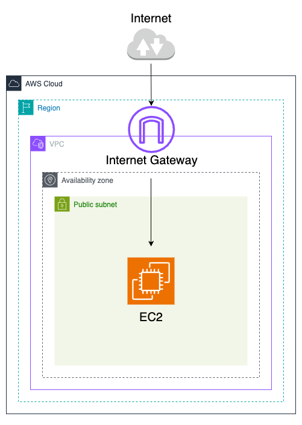
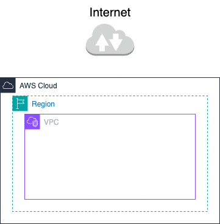

第2回：VPC設計とEC2へのSSH接続
Posted at 2025-06-19
はじめに
このセッションで学べること
このセッションでは以下を学びます。
- AWSにおけるVPC（仮想ネットワーク）の基本理解
- VPCの設計・作成のハンズオン
- EC2（仮想サーバー）の基本理解
- EC2インスタンスの作成方法
- EC2インスタンスへのSSH接続（ハンズオン）
ハンズオンで製作する構成図は以下になります。

1. VPCの概要と構成要素
AWSではEC2などを立ち上げる際、以下のリソースを利用しインフラを作ります。
- VPC
- サブネット
- インターネットゲートウェイ（IGW）
- ルートテーブル
- NATゲートウェイ
- セキュリティグループ（SG）
- ネットワークACL（NACL）
- Elastic IP（EIP）
- Elastic Network Interface（ENI）
1. VPCとは？
Amazon VPC（Virtual Private
Cloud）は、AWS内で自由に構築できる仮想的なネットワーク環境です。企業が自社専用ネットワークを構築するように、IPアドレス範囲やサブネット、ルート、セキュリティ設定などを柔軟に設計できます。

VPCのみ作成した状態ではインターネットとは接続しておらず、VPC内は完全にプライベートな状態です
VPCのネットワーク範囲はCIDR（Classless Inter-Domain
Routing）で指定します。CIDRは、IPアドレスとサブネットマスクを一緒に記述する方法です。
-
例：10.0.0.0/16
（ネットワークアドレスは10.0.0.0、サブネットマスクは16ビット）
VPCに使用するCIDRは以下の範囲に収まる値が推奨されています。
ハンズオンでは10.0.0.0/16を使用します。
|
CIDR
|
IPアドレス範囲
|
IPアドレス数
|
10.0.0.0/8
|
10.0.0.0 ～ 10.255.255.255
|
約1,670万
|
172.16.0.0/12
|
172.16.0.0 ～ 172.31.255.255
|
約104万
|
192.168.0.0/16
|
192.168.0.0 ～ 192.168.255.255
|
約6.5万
|
2. ネットワーク構成の基本
サブネット（Subnet）
VPCを小さく分割したネットワーク。EC2などのリソースはサブネット内に作成します。
サブネットの図を挿入
サブネットにも「10.0.1.0/24」、「10.0.2.0/24」などCIDRを指定します。VPCのCIDR範囲に収まる値を使用します。
上記図の状態ではまだインターネットとサブネットはつながっていません。インターネットと繋がっていないサブネットはプライベートサブネットと呼ばれます。
インターネットと接続するためには必要なものがいくつかあります。
🌐 インターネットゲートウェイ（IGW）
VPC図を挿入
VPCをインターネットに接続するための出入口。VPCにアタッチします。
出入り口がつきましたが、インターネットに接続するにはまだ必要なものがあります。
🛣 ルートテーブル（Route Table）
サブネットの通信経路(ルート)を定義する設定。ルートには、送信先となるIPアドレスの範囲(CIDR)と、通信が経由するリソースをターゲットとして指定します。
ルートテーブルの図を挿入
サブネットをインターネットと接続させる場合、送信先を0.0.0.0./0とし、ターゲットにインターネットゲートウェイを指定します。
ルートテーブルの図を挿入
サブネットに上記のルートテーブルがアタッチされているものは、インターネット接続ができるため、パブリックサブネット呼ばれます。
ルートテーブルにはデフォルトで送信先：10.0.0.0/16、ターゲット：localが設定されています。これは、VPCのCIDR範囲内への通信がVPC内部(local)で行われるようにするものであり、削除することはできません。
-
パブリックサブネット：インターネットとの通信が可能なサーバー向け（例：Webサーバー）
-
プライベートサブネット：外部アクセス不可。内部処理向け（例：DB）
🔁 NAT Gateway
プライベートサブネットのインスタンスが外部と通信するために必要なリソースです。
NAT Gatewayの構成図
NAT
Gatewayを使用することで、プライベートサブネット内のインスタンスはインターネットへのアウトバウンド通信が可能になります。インバウンド通信はできません。
3. セキュリティとIP管理
🔐 セキュリティグループ（SG）
EC2など、インスタンスレベルで動作するファイアウォールです。
通信のルール（インバウンドとアウトバウンド）を設定し、どんな通信を許可するかを決めます。
具体的には、「どんな通信か（プロトコルやポート番号）」と「どこから・どこへの通信か（CIDRや他のセキュリティグループ）」を指定します。
セキュリティグループの参考画面の図
上の図ではインバウンドルールで自宅のIPアドレスからSSH接続を許可しています。
セキュリティグループはステートフルという特徴があります。インバウンド通信を許可すると、アウトバウンドの許可ルールがない場合でも、応答は自動的に許可されます。逆も同様です。ただ自動許可されるのは応答に限ります。
📜 ネットワークACL（NACL）
サブネット単位でアクセス制御をします。
インバウンドルールとアウトバウンドルールを設定します。
許可と拒否の両方の設定ができます。
ステートレスであり、応答通信が必要な場合インバウンドルールとアウトバウンドルールの両方に許可ルールを設定する必要があります。
デフォルトネットワークACLの参考図
デフォルトでは全ての通信が許可されている状態です。
ルール番号が小さいものから順に評価され、最初にマッチしたルールが適用されます。
ルール番号 *
は暗黙のDenyと呼ばれ、削除することできず、何もルールを設定しない場合は全ての通信が拒否される仕組みになっています。
🧠 SGとNACLの違い
| 項目 |
セキュリティグループ |
ネットワークACL |
| 適用単位 |
EC2インスタンス |
サブネット |
| 通信の状態 |
ステートフル |
ステートレス |
| 許可・拒否 |
許可のみ |
許可・拒否両方 |
4. 可用性と拡張性
🏢 アベイラビリティゾーン（AZ）
リージョン内の物理的に分離されたデータセンター群。AZ単位でサブネットを配置することで、冗長構成と高可用性を実現できます。
AZの構成図
🌉 マルチVPCと接続
数のVPCを連携させて、それぞれのVPCが持つネットワークリソースを共有したり、相互に通信できるようにする仕組み。
VPCを用途や部門ごとに分け、VPCピアリングやTransit
Gatewayで接続することで、大規模なネットワーク設計が可能です。
2. VPCハンズオン
このハンズオンでは、EC2インスタンスを配置するための最小構成のVPCを作成します。パブリックサブネットを1つ持ち、インターネット接続が可能な構成を用意します。
構成概要
- VPC（10.0.0.0/16）
- パブリックサブネット（10.0.1.0/24）
- インターネットゲートウェイ
- ルートテーブル（0.0.0.0/0 → IGW）
- セキュリティグループ（SSH: 22番ポートを自分のIPから許可）
作成の流れ
- VPCを作成（10.0.0.0/16）
- サブネットを作成（10.0.1.0/24、パブリック）
- インターネットゲートウェイ（IGW）を作成してVPCにアタッチ
- ルートテーブルを作成し、0.0.0.0/0 に IGW を設定
- ルートテーブルをサブネットに関連付け
- サブネットの「自動割り当てパブリックIP」を有効にする
- セキュリティグループを作成し、SSH(22)を許可
手順
VPCを作成（10.0.0.0/16）
VPCを検索
サブネットを作成（10.0.1.0/24、パブリック）
インターネットゲートウェイ（IGW）を作成してVPCにアタッチ
ルートテーブルを作成し、0.0.0.0/0 に IGW を設定
ルートテーブルをサブネットに関連付け
サブネットの「自動割り当てパブリックIP」を有効にする
セキュリティグループを作成し、SSH(22)を許可
この構成で、次のEC2ハンズオンでパブリックIPからSSH接続が可能になります。
3. EC2とは？
物理サーバーは、一般的に次のような要素を備えています：
-
OS（オペレーティングシステム）（サーバーを動かす基本ソフトウェア）
- CPU（処理を行う頭脳部分）
- メモリ（一時的なデータを保持する場所）
- ハードディスク（OSやデータを保存する場所）
-
NIC（ネットワークインターフェースカード）（ネットワーク通信を行う）
EC2（仮想サーバー）は、このような物理サーバーの機能をソフトウェア的に実現したものです。
物理的なサーバーを複数に分割し、それぞれを独立した『仮想サーバー（EC2インスタンス）』として利用可能にしています。
AWSでは、このサービスを Amazon EC2（Elastic Compute Cloud）
と呼んでいます。
AMI（Amazon Machine Image）
仮想サーバー（EC2インスタンス）を立ち上げる際に使う
「OSとソフトウェアが含まれたテンプレート」 です。Amazon
LinuxやWindowsなど、用途に応じたAMIを選んでサーバーを立ち上げます。
インスタンスタイプ
EC2インスタンスの性能を決める「CPU、メモリ、ネットワーク性能などのスペック」であり、様々なタイプ（例：t3.micro,
m5.largeなど）があります。
EBS（Elastic Block Store）
EC2にアタッチする仮想ハードディスクです。OSやデータの保存場所として使い、インスタンスを停止してもデータを維持できます。
ENI（Elastic Network Interface）
EC2にアタッチできる仮想ネットワークインターフェース。
Elastic IP（EIP）
アタッチ可能な固定グローバルIP。EC2インスタンスは再起動するたびにIPアドレスが変わるが、Elastic
IPを使用することで固定IPにすることができます。
キーペア
SSH接続のための公開鍵と秘密鍵のセットです。インスタンス作成時に登録し、秘密鍵（.pemファイル）を使って安全にリモート接続します。
4. EC2ハンズオン
このハンズオンでは、VPC上にEC2インスタンスを作成し、SSH接続を行って
"hello world" を表示するまでの手順を体験します。
前提
- VPCとパブリックサブネットが作成済み
- インターネットゲートウェイが設定済み
- キーペア（.pemファイル）を事前に作成しておく
✅ キーペアの作成方法（AWSマネジメントコンソール）
- AWSマネジメントコンソールにログイン
- サービスメニューから「EC2」を選択
- 左メニューで「キーペア」をクリック
- 「キーペアを作成」を押す
-
下記の項目を入力または選択：
- キーペア名（例：
my-key）
- キーペアの種類：RSA（推奨）
-
プライベートキーフォーマット：
.pem（Mac /
Linux）または .ppk（Windows用PuTTY）
-
「キーペアを作成」を押すと、秘密鍵ファイル（
.pem）が自動的にダウンロードされる
⚠️ ダウンロードした
.pem
ファイルは後から再取得できないので、大切に保管してください！
手順
- EC2ダッシュボードに移動し「インスタンスを起動」
- AMIの選択：Amazon Linux 2を選択
-
インスタンスタイプ：無料枠の
t2.micro または
t3.micro を選択
- キーペアの選択：作成済みのキーペアを選ぶ
- ネットワーク設定：作成したVPCとパブリックサブネットを選択
- 「自動割り当てパブリックIPを有効化」
-
セキュリティグループ：SSH (ポート22) を自分のIPに制限して許可
- インスタンスを起動
SSH接続
- インスタンスの「パブリックIPv4アドレス」を確認
-
ターミナルで以下のコマンドを実行（pemファイルのパスは適宜変更）
chmod 400 my-key.pem
ssh -i my-key.pem ec2-user@<インスタンスのパブリックIP>
"hello world" を表示
- ログイン後、以下のコマンドを実行
echo "hello world"
これでEC2ハンズオンは完了です！仮想サーバーへの接続体験ができました
🎉